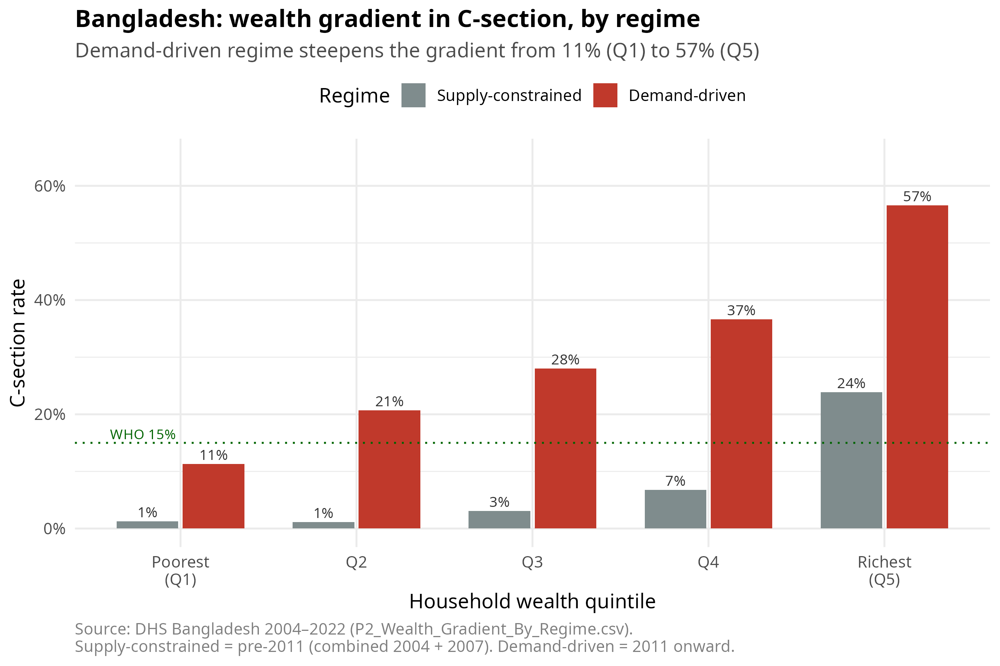

The wealth gradient by regime
Motivation
A second signature of the supply-to-demand regime change is the steepness of the wealth gradient in C-section uptake. Under supply constraints, only the wealthiest households can reach a facility for surgery; the gradient is compressed because the absolute rates are tiny everywhere. Under demand-driven conditions, the gradient steepens dramatically: the surge is concentrated in the upper wealth quintiles, where elective procedures are concentrated in private clinics.
This is consistent with the broader LMIC literature on the political economy of C-section (Sujon et al. 2025).
Data and setup
The pre-aggregated wealth-quintile counts by regime are in data/processed/descriptive/P2_Wealth_Gradient_By_Regime.csv. The “supply-constrained” regime is the pooled 2004 + 2007 BDHS waves; “demand-driven” is 2011 onward.
Results
Interpretation
The wealth gradient under demand-driven conditions implies that who gets a C-section is increasingly correlated with who is at low baseline risk for adverse outcomes — exactly the selection mechanism that drives the wave-by-wave sign flip described in Chapter 1.
An IV approach that uses community-level selection (the leave-one-out community C-section rate) cannot disentangle individual maternal risk from community-level demand pressure, because both vary together with the wealth gradient. Chapters 6–11 quantify the resulting identification failure.
Code
scripts/20_descriptive/24_wealth_gradient.R
# =============================================================================
# 24_wealth_gradient.R
#
# Wealth gradient in C-section uptake, contrasting the supply-constrained vs
# demand-driven regimes. In the supply-constrained regime, the gradient is
# compressed (only the wealthiest reach surgery); in the demand-driven regime,
# the gradient steepens dramatically — the surge is concentrated in upper
# wealth quintiles.
#
# Input: data/processed/descriptive/P2_Wealth_Gradient_By_Regime.csv
# Output: figures/04_wealth_gradient.png
# Reference: Wealth gradient as evidence of demand-driven selection
# (Sujon et al. 2025; PLOS One 2024).
# =============================================================================
suppressPackageStartupMessages({
library(dplyr)
library(ggplot2)
library(readr)
library(here)
})
dat <- read_csv(
here("data", "processed", "descriptive", "P2_Wealth_Gradient_By_Regime.csv"),
show_col_types = FALSE
) %>%
filter(country == "Bangladesh") %>%
mutate(
wealth_q = factor(wealth_q,
labels = c("Poorest\n(Q1)", "Q2", "Q3", "Q4", "Richest\n(Q5)")),
regime = factor(regime,
levels = c("Supply-constrained", "Demand-driven"))
)
p <- ggplot(dat, aes(x = wealth_q, y = csec_pct / 100, fill = regime)) +
geom_col(position = position_dodge(width = 0.75), width = 0.7) +
geom_text(
aes(label = sprintf("%.0f%%", csec_pct)),
position = position_dodge(width = 0.75),
vjust = -0.4, size = 3.3, color = "gray20"
) +
geom_hline(yintercept = 0.15, linetype = "dotted", color = "darkgreen") +
annotate("text", x = 0.6, y = 0.165,
label = "WHO 15%", hjust = 0,
color = "darkgreen", size = 3.2) +
scale_fill_manual(
values = c(`Supply-constrained` = "#7f8c8d", `Demand-driven` = "#c0392b"),
name = "Regime"
) +
scale_y_continuous(labels = scales::percent_format(accuracy = 1),
limits = c(0, 0.65)) +
labs(
title = "Bangladesh: wealth gradient in C-section, by regime",
subtitle = "Demand-driven regime steepens the gradient from 11% (Q1) to 57% (Q5)",
x = "Household wealth quintile",
y = "C-section rate",
caption = "Source: DHS Bangladesh 2004–2022 (P2_Wealth_Gradient_By_Regime.csv).\nSupply-constrained = pre-2011 (combined 2004 + 2007). Demand-driven = 2011 onward."
) +
theme_minimal(base_size = 13) +
theme(
legend.position = "top",
plot.title = element_text(face = "bold"),
plot.subtitle = element_text(color = "gray30"),
plot.caption = element_text(color = "gray50", hjust = 0)
)
out_path <- here("figures", "04_wealth_gradient.png")
ggsave(out_path, p, width = 9, height = 6, dpi = 300)
cat("Saved:", out_path, "\n")